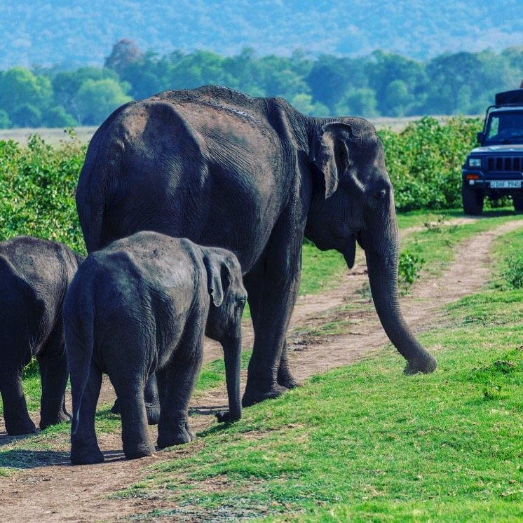

Hiriwadunna, near Habarana
Village Life & Local Encounters
Discover rural paths, lush paddy fields, traditional village life and authentic local culture and also traditional cart ride experince .

Thoughtfully planned private itineraries connecting ancient rock citadels, mist-cloaked tea estates, untamed leopard wilderness, and serene southern coastlines.
From the quiet charm of village life to the untamed wilderness, mist-covered mountains and timeless traditions, discover a thousand ways to fall in love with this island.
Discover rural paths, lush paddy fields, traditional village life and authentic local culture and also traditional cart ride experince .

Explore the flavours of the island through aromatic spices, fresh ingredients and traditional rice-and-curry preparation.

Experience the thrill of a guided wildlife safari across remarkable natural landscapes, with opportunities to observe elephants, birds and other wildlife.

Discover dramatic cascades, lush highlands and the peaceful beauty of Sri Lanka’s waterfall country.

Drift across tranquil waters and admire tropical greenery and the slower rhythms of local life.

Discover Sri Lanka’s legendary tea heritage among rolling green plantations, misty hills and traditional tea-making landscapes.

Follow scenic mountain trails through tea country to spectacular viewpoints and unforgettable highland scenery.

Observe magnificent wild elephants in their natural environment through responsible wildlife experiences.

Every journey reveals a different side of Sri Lanka. Discover its wild beauty, vibrant traditions and unforgettable landscapes with SL Mango Exotic Tours.
Journey through ancient kingdoms, sacred landmarks, mist-covered mountains, and the breathtaking natural wonders of Sri Lanka.

An astonishing 200-metre sheer granite column transformed by King Kashyapa in the 5th century into an audacious royal citadel, featuring ancient frescoes, polished mirror walls, and landscaped pleasure water gardens.
Thoughtfully structured travel routes with sensible pacing, dedicated private chauffeur-guides, and verified authentic experiences.
Your journey through Sri Lanka is guided by a professional licensed chauffeur in a modern, climate-controlled executive vehicle dedicated solely to you and your party.

Toyota Premio / Axio / Prius hybrid with dual climate control, plush seating, and smooth quiet suspension for mountain routes.
View Vehicle Specs
High-roof luxury passenger van with dual air conditioning, reclining captain seats, and generous baggage capacity for families.
View Vehicle Specs
Executive tourist mini-coach with heavy-duty air conditioning, microphone PA system for guides, and exterior luggage bays.
View Vehicle SpecsWe operate as direct local journey coordinators, focusing on transparent relationships, safety, and respect for our travellers and our island home.
You work directly with the local team planning and managing your journey in Sri Lanka — eliminating layers of overseas middleman markups.
We design itineraries with realistic driving times and sensible overnight stays, so you never feel rushed through Sri Lanka's wonders.
Friendly, licensed English-speaking professionals with deep local knowledge, dedicated to your safety, convenience, and privacy.
Around-the-clock on-ground assistance via WhatsApp or phone throughout your entire journey across the island.
Planning an international holiday should feel inspiring and clear. Here is how we craft and confirm your Sri Lankan journey together.
Tell us your approximate travel dates, preferred pace, number of travellers, and interests — whether it is wildlife, heritage, hiking, or ocean relaxation.
We prepare a detailed day-by-day itinerary proposal with transparent inclusions, recommended overnight locations, and vehicle arrangements for your review.
Finalise arrangements directly with our team. We assign your dedicated chauffeur, coordinate your scenic train tickets, and greet you upon arrival.
Experience our floating 3D gallery featuring the rock citadels, misty tea highlands, wild leopard reserves, and coastal ramparts of Sri Lanka.
We believe that trust is earned through transparent human service rather than fabricated internet badges or generic marketing hype. We are preparing our official Google and TripAdvisor traveller review listings. In the meantime, we are delighted to introduce you directly to our lead chauffeur-guides and discuss your plans in full transparency.
Speak With Our Tour DirectorWhether you are drawn to the misty peaks of Ella, the ancient stone cities of the Cultural Triangle, or private wildlife encounters in Yala, we are ready to bring your journey to life.